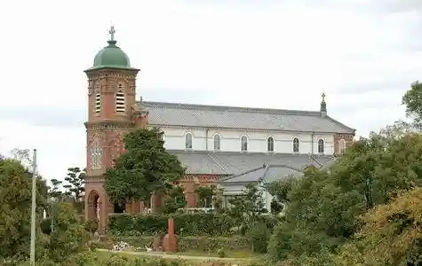
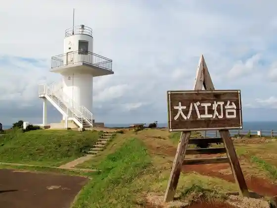
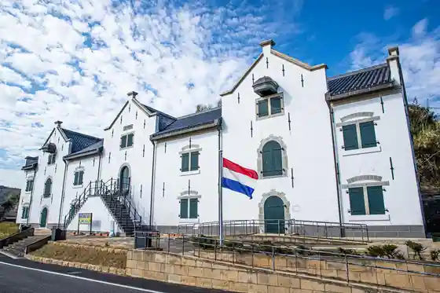
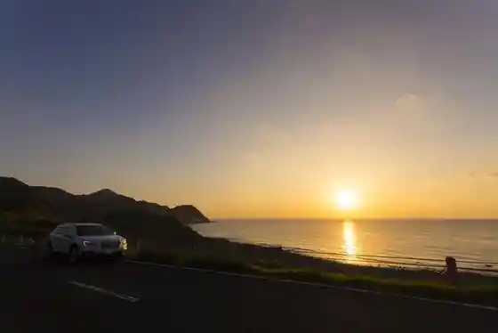

Kawauchi Toge
Hirado, Nagasaki · 0950-22-4111 · Official / source link
Tahira Tenshudo
Hirado, Nagasaki · Official / source link

Dai Bae Lighthouse
Hirado, Nagasaki · 0950-22-4111 · Official / source link

Hirado Oranda Shokan
Hirado, Nagasaki · 0950-26-0636 · Official / source link

Ikitsuki Sansettoei
Hirado, Nagasaki · 0950-23-8600 · Official / source link

Jiin to Kyokai no Mie Ru Fukei
Hirado, Nagasaki · 0950-22-4111 · Official / source link
Hirado Bridge
Hirado, Nagasaki · 0950-57-0600 · Official / source link
Hirado Onsen
Hirado, Nagasaki · 0950-23-8600 · Official / source link
Hirado Shiro
Hirado, Nagasaki · 0950-22-2201 · Official / source link
Roadside Station (Konchu no Sato Tabira)
Hirado, Nagasaki · 0950-57-1111 · Official / source link
Shiodawara no Dangai
Hirado, Nagasaki · 0950-22-4111 · Official / source link
Hirado Ikitsuki Town Museum Shima no Kan
Hirado, Nagasaki · 0950-53-3000 · Official / source link
Hirado no Seichi to Shuraku (Kasuga Shuraku to Yasuman Gaku)
Hirado, Nagasaki · 0950-22-4111 · Official / source link
Matsura Shiryo Museum
Hirado, Nagasaki · 0950-22-2236 · Official / source link
Ne Shishi Beach
Hirado, Nagasaki · 0950-22-4111 · Official / source link
Nipponhondo Sai Seihoku Haji no Shima Totatsu Shomeisho
Hirado, Nagasaki · 0950-53-2927 · Official / source link
Hirado no Seichi to Shuraku (Nakae no Shima)
Hirado, Nagasaki · 0950-22-4111 · Official / source link
Nin Tsuku Beach
Hirado, Nagasaki · 0950-22-4111 · Official / source link
Senrigahama Beach
Hirado, Nagasaki · 0950-22-4111 · Official / source link
Hirado Onsen Ude Yu Ashi Yu
Hirado, Nagasaki · 0950-22-4111 · Official / source link
Saiwaibashi (Oranda Hashi)
Hirado, Nagasaki · 0950-22-4111 · Official / source link
Tei Seiko Memorial Museum (Teiseikokinenkan)
Hirado, Nagasaki · 0950-24-2331 · Official / source link
Ikitsuki Ohashi Park
Hirado, Nagasaki · 0950-53-2927 · Official / source link
Oshima Village Kamiura no Streetscape
Hirado, Nagasaki · 0950-22-4111 · Official / source link
Shiibyuranchi
Hirado, Nagasaki · 0950-24-2338 · Official / source link
Kasuga Shuraku Kyoten Shisetsu (Katarina)
Hirado, Nagasaki · 0950-22-7020 · Official / source link
Sai Kyo Tera (Miedai to, Reiho Kan)
Hirado, Nagasaki · 0950-22-2669 · Official / source link
Tabira Konchu Shizen Sono
Hirado, Nagasaki · 0950-57-3348 · Official / source link
Saki Ho Park
Hirado, Nagasaki · 0950-22-4111 · Official / source link
Hirado Kirishitan Museum
Hirado, Nagasaki · 0950-28-0176 · Official / source link
Nagayama Tei (Akashi Ya)
Hirado, Nagasaki · 0950-22-3793 · Official / source link
Hirado Onsen Kyuto Center
Hirado, Nagasaki · 0950-22-4111 · Official / source link
Umegayatsu Kairakuen
Hirado, Nagasaki · 080-2743-6946 · Official / source link
Danjiku Sama
Hirado, Nagasaki · 0950-53-2111 · Official / source link
Nakase Sogen Campground
Hirado, Nagasaki · 090-5772-9101 · Official / source link
Tahira Park
Hirado, Nagasaki · 0950-57-0309 · Official / source link
Ichiroku Beach
Hirado, Nagasaki · 0950-22-9140 · Official / source link
Kameoka Shrine
Hirado, Nagasaki · 0950-22-2228 · Official / source link
Jigan Sakura
Hirado, Nagasaki · 0950-23-8600 · Official / source link
Kameoka Park
Hirado, Nagasaki · 0950-22-4111 · Official / source link
Han Moto Campground
Hirado, Nagasaki · 0950-22-4111 · Official / source link
Arasaki Beach
Hirado, Nagasaki · 0950-22-4111 · Official / source link
Rekigan (Tsubuteiwa)
Hirado, Nagasaki · 0950-22-4111 · Official / source link
Ta no Ura Onsen
Hirado, Nagasaki · 0950-22-2241 · Official / source link
Daikon Saka Shirahama Beach (Hirado Oshima Village)
Hirado, Nagasaki · 0950-22-9140 · Official / source link
Hayasaki Beach
Hirado, Nagasaki · 0950-22-9140 · Official / source link